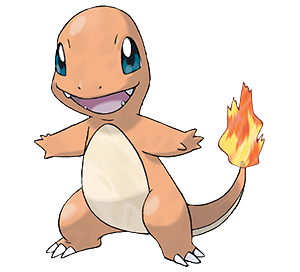

HOME MAIN STORY STARTERS GENERATIONSMAIN STARTERS

MAIN STARTERS
When the game was first introduced there were three starter pokemon.they were
charmander,squirtle and bulbasaur.When the game first begins a player is given
a choice from the three to choose. after choosing a pokemon a player will begin
his journey.
SQUIRTLE
Squirtle[2] (/ˈskwɜːrtəl/), known as Zenigame (ゼニガメ) in Japan, is a Pokémon
species in Nintendo and Game Freak's Pokémon franchise. It was designed by Atsuko
Nishida.[1] Its name was changed from Zenigame to Squirtle during the English
localization of the series in order to give it a "clever and descriptive name."
In animated appearances, Squirtle is voiced in Japanese by Rikako Aikawa and in
English localizations by Eric Stuart, and later Michele Knotz. Squirtle, in the
anime, never evolved for reasons never truly explained by the creators.
CHARMANDER

Charmander (Japanese: ヒトカゲ Hitokage) is a Fire-type Pokémon introduced in Generation I.
It evolves into Charmeleon starting at level 16, which evolves into Charizard starting at
level 36. Along with Bulbasaur and Squirtle, Charmander is one of three starter Pokémon
of Kanto available at the beginning of Pokémon Red, Green, Blue, FireRed, and LeafGreen.
BULBASAUR
Bulbasaur (Japanese: フシギダネ Fushigidane) is a dual-type Grass/Poison Pokémon introduced
in Generation I.It evolves into Ivysaur starting at level 16, which evolves into Venusaur
starting at level 32.Along with Charmander and Squirtle, Bulbasaur is one of three starter
Pokémon of Kanto available at the beginning of Pokémon Red, Green, Blue, FireRed, and LeafGreen.